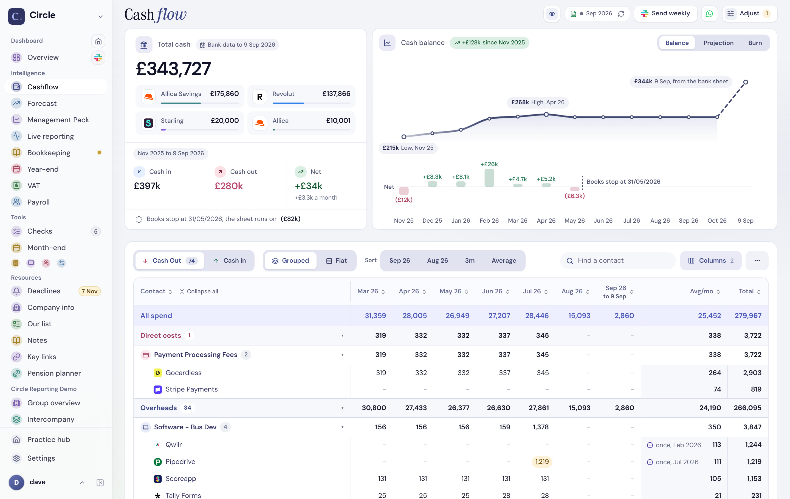
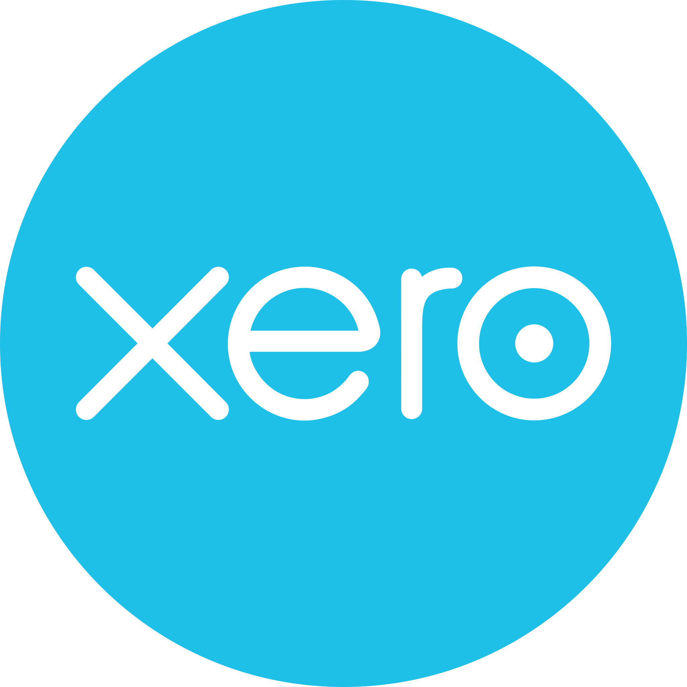
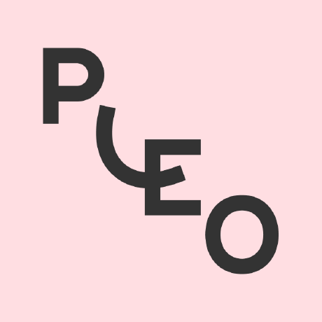
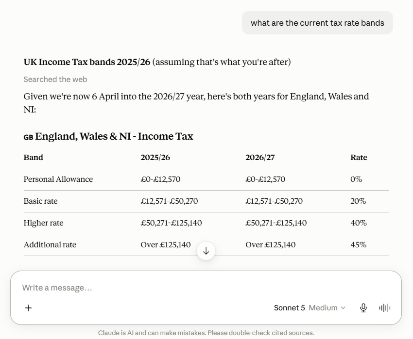
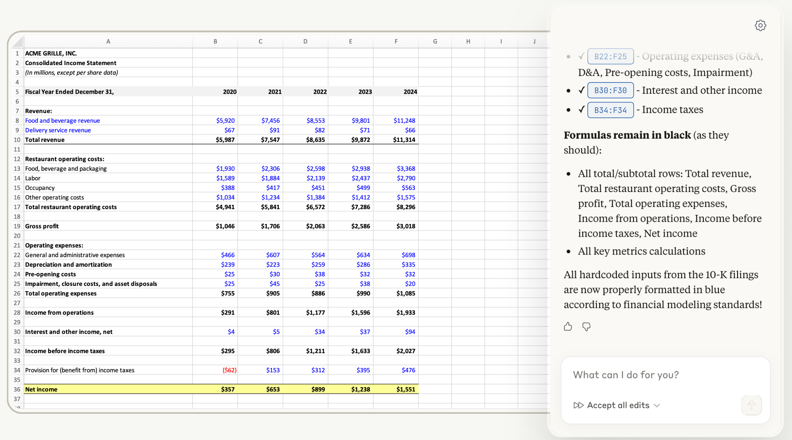
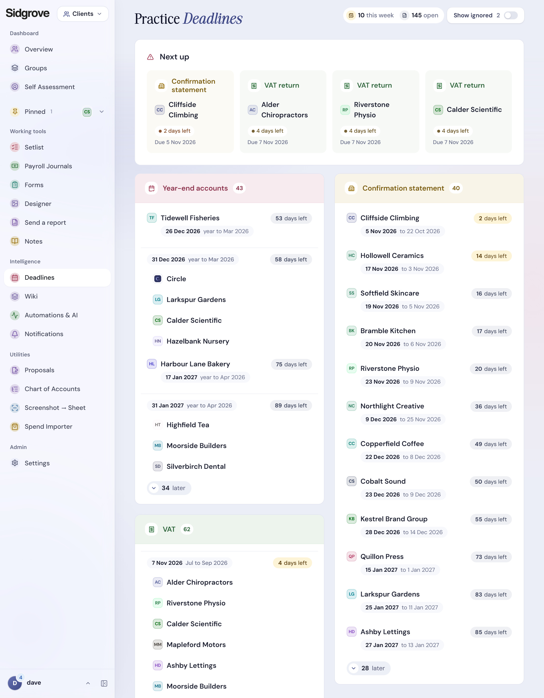
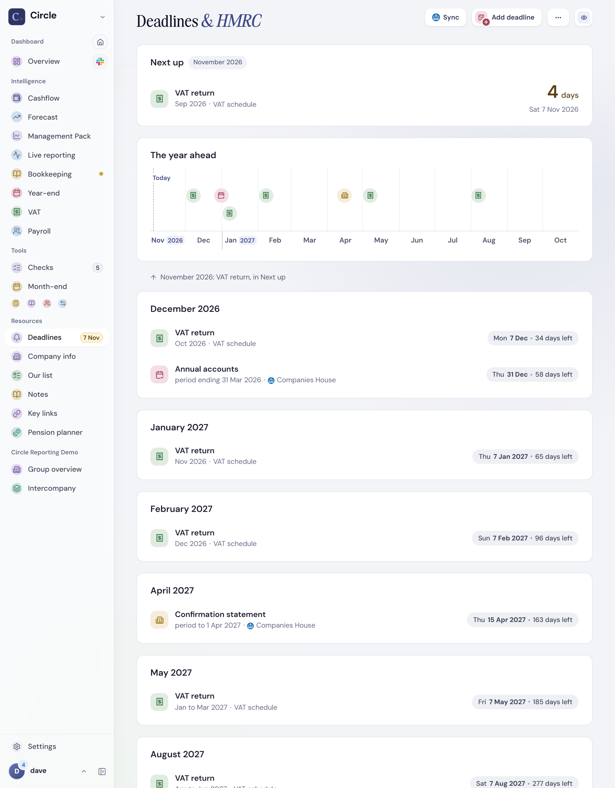
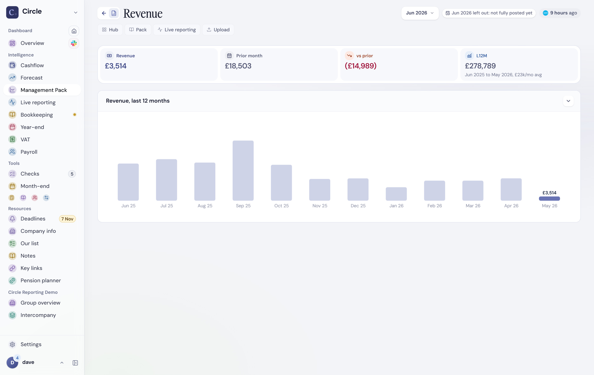
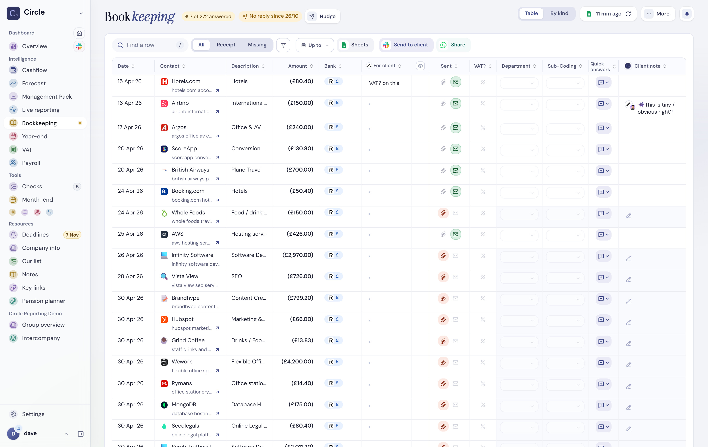

AI Native
is a Lie.
If full autonomy worked,
I’d be using it.

Dave Sellick
Frontier models, hands on
~12 hrs / day
Claude Max subscription
limit hit · weekly
Fully autonomous, unreviewed
0 · not worth the risk yet
A copilot. Never the pilot. Human-led.Not in the loop
The pilot
Agentic AI autonomously completing end-to-end task completion.
The copilot
Augments. We stay in charge.
An exception layer. It flags; you choose to act.
Breaks down steep learning curves.
My vibe coding stack.
> let’s go
Writes the code
From $100 a month
GitHub
All checks passed
Keeps every version safe
$4 a month
Vercel
Live
Puts the app online
$20 a month
Supabase
Your data
Stores the data and logins
$25 a month
Master
Job 1
Job 2
Job 3
Job 4
pc1pc2
Let’s go.
Opens the app
Takes the Master seat
Asks which computers
Pulls the latest code
Reads the handoff
Starts the daily reviews
Splits the work into jobs
Checks, merges, pushes
localhost

Live means the checks are green and the site is really deployed.
Disjointed workflows. Largely spreadsheet driven.
All of it, in one product.
Cashflow v7 FINAL.xlsx
VAT workings.xlsx
 Month end checklist.xlsx
Month end checklist.xlsxPayroll journals.xlsx
Deadlines tracker.xlsx
Accruals.xlsxForecast (Dave’s copy).xlsx
Prepayments.xlsx
Management accounts.xlsxYear end papers.xlsx
Client list.xlsx
Bookkeeping queries.xlsxProposals.xlsx
Cashflow v8 FINAL.xlsx
Group recharges.xlsxSidgrove Intelligence
Hundreds of features.
One orchestration app.
Practice toolset & data

XeroExcel
SheetsApron

PleoPaycircle
Companies House
Sidgrove Intelligence
Circle · month end
Data synced & checked
Month-end review
Accruals & prepayments
Building the report pack…
Client insights & reporting
 #circle_finance
#circle_financeS
Sidgrove 9:02
June pack is ready. Two things worth a look.
Ready
Deterministic at its core. AI savvy, never AI native.
AI Chat Interfaces. The daily driver.
The expert co-pilot you can use on the fly at any time.

What I use
Claude
Gemini
ChatGPT
Other options
Microsoft Copilot
Perplexity
DeepSeek
AI note takers.
Summary ready
Fees agreed: £1,850 a month from April
Move the payroll sign off date to 22nd of each month
What I use
Loom
Other options
Fireflies
Vinyl
 Granola
Fathom
Granola
Fathom
Granola
Fathom
Spreadsheet add-ons. Used mindfully.

What I use
Claude for Excel
ChatGPT for Sheets
Thank
you.

Scan for the AI walkthrough recordings
Daily cashflow
Jev
Deadlines & HMRC


Management accounts
Claude Sonnet

Bookkeeping
Claude Haiku · Jev

Payroll review
Claude Sonnet
VAT review
Claude Haiku · Jev